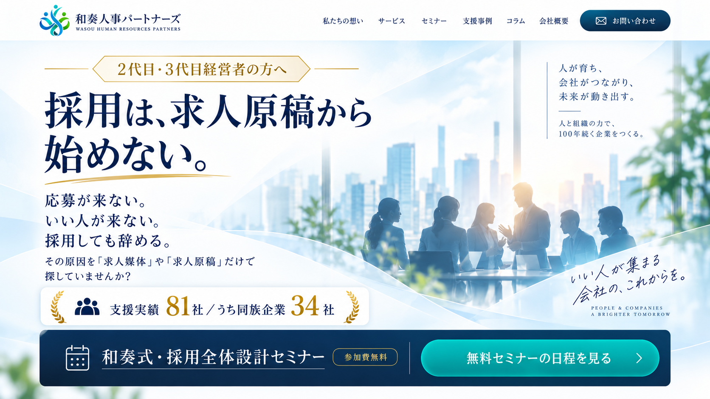

01
応募数の改善
応募が2〜3倍以上に増えた事例も
「求人を出しているのに反応がない」状態から、求職者に見つけてもらい、興味を持ってもらえる採用へ。

求人媒体を変えても、紹介会社を増やしても、給与を見直しても。
なぜか採用がうまくいかない。
採用がうまくいかないとき、多くの企業がまず見直すのは、求人媒体・求人原稿・掲載条件・給与・紹介会社です。 もちろん、これらも大切です。しかし、そこを変えても改善しない会社があります。
御社の場合は、どうでしょうか。
「求人を出しているのに反応がない」状態から、求職者に見つけてもらい、興味を持ってもらえる採用へ。
ただ応募数を増やすのではなく、「この人と一緒に働きたい」と思える人材との接点を増やしていきます。
求人時に伝えた魅力と入社後の実態を一致させることで、ミスマッチを減らし、定着につなげます。
採用とは、「何人応募が来たか」だけで測るものではありません。
自社に合う人と出会い、入社し、働き続けてもらう。そこまでを一つの流れとして考えることが重要です。
理論だけではありません。採用の見方・伝え方を変えることで、支援先にも変化が生まれています。
応募が来ないなら、本当に「求人媒体」だけの問題なのか。欲しい人が来ないなら、本当に「応募者の質」だけの問題なのか。 採用しても辞めるなら、本当に「本人の問題」だけなのか。その原因を一段ずつ見ていくと、今までとは違う課題が見えてくることがあります。
採用を「整える → 決める → 伝える」の順で捉え、求人を出す前に何を整え、何を決める必要があるのかを見直します。
求職者が求人を知り、興味を持ち、調べ、比較する中で、どこで離れているのかを見るための考え方です。
会社の中にある価値を掘り起こし、採りたい人が「これは自分に関係がある」と感じるConceptとMessageへ変換します。
求人媒体だけでなく、Web・採用ページ・SNS・口コミなどを「質 × 量 × 接点」の視点から見直します。
「応募が来ない」という同じ症状でも、会社によって原因は違います。
その見つけ方を、無料セミナーでお伝えします。
このセミナーでは、和奏式・4つのアプローチをもとに、採用を今までとは違う角度から見直していきます。
ご参加いただいた方には、自社の採用を具体的に見直すための2つの特典をご用意しています。
求人の問題なのか。その前の「決める」「整える」にあるのか。採用を部分ではなく、全体から確認します。
求人媒体だけではなく、採用ページや企業サイト、SNS、Googleレビューなども含め、求職者から御社がどう見えているのかを確認します。
採用に正解は一つではありません。
だからこそ、「自社の場合はどうなのか？」を見ることが大切です。
採用の悩みは、人を「集める」ことだけではありません。
誰を迎え、どう育て、どう定着してもらうのか。
そこまで含めて、一度整理してみませんか。

人には、それぞれ違う強み、価値観、役割があります。それを無理に揃えるのではなく、それぞれの個性を活かしながら、会社という一つの「和」にしていく。それが、和奏人事パートナーズが目指している組織づくりです。
大卒後、叔父が経営する30数店舗の着物専門店に入社。常務取締役として、経営再建や人・組織の問題に向き合ってきました。その後、2012年に独立。
採用支援を重ねる中で、求人媒体や求人原稿だけでは解決できない会社が数多くあることを実感。現在は、創業家・組織・求人設計・情報発信までを一体として捉える「和奏式」の採用・人事メソッドを体系化し、2代目・3代目経営者を中心に支援しています。
採用を変える前に、まず“採用の見方”を変えてみませんか。